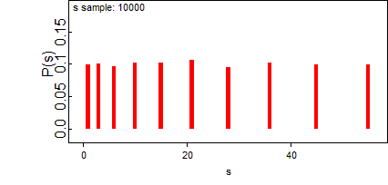

Advanced use of the BUGS Language
Generic sampling distribution
Suppose we wish to use a sampling distribution that is not included in the standard distributions (see the list of
Distributions), in which an observation
x[
i] contributes a likelihood term
L[
i] (a function of
x[
i]). We may use the 'loglik' distribution
dloglik, for a dummy observed variable:
dummy[i] <- 0
dummy[i] ~ dloglik(logLike[i]) where
logLike[i] is the contribution to the log-likelihood for the i
th observation. The
dloglik function implements the 'zero poisson' method utilized in WinBUGS.
This is illustrated in the example below in which a normal likelihood is constructed and the results are compared to the standard formulation.
model {
for (i in 1:7) {
dummy[i] <- 0
# likelihood is exp(logLike[i])
dummy[i] ~ dloglik(logLike[i])
# log(likelihood)
logLike[i] <- -log(sigma) - 0.5 * pow((x[i] - mu) / sigma, 2)
}
mu ~ dunif(-10, 10)
sigma ~ dunif(0, 10)
}or model {
# check using normal distribution
for (i in 1:7) {
x[i] ~ dnorm(mu, prec)
}
prec <- 1 / (sigma * sigma)
mu ~ dunif(-10, 10)
sigma ~ dunif(0, 10)
}
Data:list(x = c(-1, -0.3, 0.1, 0.2, 0.7, 1.2, 1.7))
Initial values:list(sigma = 1, mu = 0)
Results: mean sd MC_error val2.5pc median val97.5pc start sample
mu 0.3763 0.447 0.01203 -0.5436 0.3789 1.302 1001 9000
sigma 1.145 0.4368 0.01743 0.6113 1.047 2.263 1001 9000
or
mean sd MC_error val2.5pc median val97.5pc start sample
mu 0.3642 0.494 0.004657 -0.6213 0.3663 1.342 1001 9000
sigma 1.208 0.5572 0.01174 0.6299 1.083 2.486 1001 9000
Specifying a new prior distribution
For a parameter
theta, if we want to use a prior distribution not included in the standard distributions (see the list of
Distributions), then we can use the '
dloglik' distribution (see above) for the prior specification. A single dummy observation contributes the appropriate term to the likelihood for
theta; and when it is combined with a 'flat' prior for
theta, the correct distribution results:
theta ~ dflat()
dummy ~ dloglik(logLike)
logLike <- log(desired prior for theta)
This is illustrated by the below example in which a normal prior is constructed and the results are compared to the standard formulation. It is important to note that this method will cause the theta variable to be sampled using the metropolis algorithm and may lead to poor convergence and a high Monte Carlo error
model {
for (i in 1:7) {
x[i] ~ dnorm(mu, prec)
}
dummy <- 0
dummy ~ dloglik(phi) # likelihood is exp(phi)
phi <- -0.5 * pow(mu, 2) # log(N(0, 1))
mu ~ dflat() # 'flat' prior
prec <- 1 / (sigma * sigma)
sigma ~ dunif(0, 10)
}or
model {
for (i in 1:7) {
x[i] ~ dnorm(mu, prec)
}
mu ~ dnorm(0, 1) # 'known' normal prior
prec <- 1 / (sigma * sigma)
sigma ~ dunif(0, 10)
}
Data:list(x = c(-1, -0.3, 0.1, 0.2, 0.7, 1.2, 1.7))
Initial values:list(sigma = 1, mu = 0)
Results: mean sd MC_error val2.5pc median val97.5pc start sample
mu 0.2859 0.4108 0.008778 -0.5574 0.3002 1.08 1001 9000
sigma 1.162 0.4721 0.008885 0.6178 1.05 2.359 1001 9000
or
mean sd MC_error val2.5pc median val97.5pc start sample
mu 0.2973 0.4043 0.003525 -0.5499 0.3112 1.07 1 10000
sigma 1.166 0.4785 0.007654 0.6234 1.059 2.315 1 10000
Using pD and DIC
Here we make a number of observations regarding the use of DIC and pD - for a full discussion see
Spiegelhalter et al (2002):
1) DIC is intended as a generalisation of Akaike's Information Criterion (AIC). For non-hierarchical models, pD should be approximately the true number of parameters.
2) Slightly different values of Dhat (and hence pD and DIC) can be obtained depending on the parameterisation used for the prior distribution. For example, consider the precision
tau (1 / variance) of a normal distribution. The two priors
tau ~ dgamma(0.001, 0.001)and
log.tau ~ dunif(-10, 10); log(tau) <- log.tauare essentially identical but will give slightly different results for Dhat. The first prior distribution has stochastic parent
tau and hence the posterior mean of
tau is substituted in Dhat, while in the second parameterisation the stochastic parent is
log.tau and hence the posterior mean of log(
tau) is substituted in Dhat.
3) For sampling distributions that are log-concave in their stochastic parents, pD is guaranteed to be positive (provided the simulation has converged). However, we have obtained negative pD's in the following situations:i) with non-log-concave likelihoods (e.g. Student-t distributions) when there is substantial conflict between prior and data;
ii) when the posterior distribution for a parameter is symmetric and bimodal, and so the posterior mean is a very poor summary statistic and gives a very large deviance.4) No MC error is available on the DIC. MC error on Dbar can be obtained by monitoring deviance and is generally quite small. The primary concern is to ensure convergence of Dbar - it is therefore worthwhile checking the stability of Dbar over a long chain.
5) The minimum DIC estimates the model that will make the best short-term predictions, in the same spirit as Akaike's criterion. However, if the difference in DIC is, say, less than 5, and the models make very different inferences, then it could be misleading just to report the model with the lowest DIC.
6) DICs are comparable only over models with exactly the same observed data, but there is no need for them to be nested.
7) DIC differs from Bayes factors and BIC in both form and aims.
8) Caution is advisable in the use of DIC until more experience has been gained.
It is important to note that the calculation of DIC will be disallowed for certain models. Mixtures of models of different complexity
Suppose we assume that each observation, or group of observations, is from one of a set of distributions, where the members of the set have different complexity. For example, we may think data for each person's growth curve comes from either a linear or quadratic line. We might think we would require 'reversible jump' techniques, but this is not the case as we are really only considering a single mixture model as a sampling distribution. Thus standard methods for setting up mixture distributions can be adopted, but with components having different numbers of parameters.
The below example illustrates how this is handled in
BUGS, using a set of simulated data.
Suppose that for each i: x[i] ~ N(mu, 1) with probability p; and x[i] ~ N(0, 1) otherwise (i.e. with probability 1 - p). We generate 100 observations with p = 0.4 and mu = 3 as follows. We forward sample
once from the model below by compiling the code and then using the 'gen inits' facility. The simulated data can then be obtained by selecting
Save State from the
Model menu.
model {
mu <- 3
p <- 0.4
m[1] <- 0
m[2] <- mu
for (i in 1 : 100) {
group[i] ~ dbern(p)
index[i] <- group[i] + 1
y[i] ~ dnorm(m[index[i]], 1)
}
}
We may observe the underlying mixture distribution by monitoring any one of the y[i]'s over a number of additional sampling cycles. For example, the following kernel density plot was obtained after monitoring y[1] for 1000 iterations:
To analyse the simulated data we use the following code:
model {
mu ~ dunif(-5, 5)
p ~ dunif(0, 1)
m[1] <- 0
m[2] <- mu
for (i in 1:100) {
group[i] ~ dbern(p)
index[i] <- group[i] + 1
y[i] ~ dnorm(m[index[i]], 1)
}
}After 101000 iterations (with a burn-in of 1000) we have good agreement with the 'true' values:
mean sd MC_error val2.5pc median val97.5pc start sample
mu 3.058 0.2071 0.001288 2.655 3.056 3.472 1001 100000
p 0.4243 0.05985 3.718E-4 0.3098 0.4232 0.5438 1001 100000Initial values:
list(mu = 0, p = 0.5)
Simulated data:list(
y = c(
2.401893189187883,0.2400077667887621,-0.1556589480882761,-0.8457182007723154,0.37008097263224,
3.586009960655263,1.598955590680827,3.826518138558907,-0.9630895329522409,0.6951468806412424,
3.129328672725175,0.01025316168135796,0.4887298480200992,0.3865632519840305,-0.2697534502300845,
-1.18891944058751,4.654771935717583,0.8063807170988319,-0.9867060769784521,0.9154433557950319,
-0.5419217214549653,3.358942981432516,3.33734145389337,3.3960739633218,2.038185222382867,
5.241414085016386,3.362823353717864,-0.6013483154102028,0.441480491316843,2.96228336554288,
-2.278054802181326,1.446861613005477,1.49864667127073,2.819410923921955,3.668112206659865,
0.8253991892717565,1.117718710956935,3.976040128045549,1.261678474198661,-0.03343173803015926,
-0.4908566523519207,0.3532664087054739,-1.679362022373703,-1.555760053262808,1.213022071911081,
3.421072023150202,2.523431239569371,-1.218844344999495,-0.270208787763775,-0.1217560919494103,
2.033835091596821,0.4654798734609423,-0.7231540561359688,2.146640407714382,4.286633169106659,
1.445348149793759,0.180718235361594,1.527791426438174,-1.010060680847808,1.969758236040937,
-0.3553936244225268,1.465488166547136,3.32669874753109,1.061348836020805,2.31746192198435,
0.9564080472865206,1.877477903911581,-0.6964242592539615,5.695159167887606,2.807268123194206,
-1.69815612298043,0.1881330355284009,0.04018232765300667,2.272096174325846,0.9694913345710192,
3.979152197443702,-0.7028546956095989,1.371423010966528,1.646618045628321,0.1919331499516834,
3.587928853903195,0.1219688057614579,2.570950727333546,1.888563572434331,1.10249950266553,
4.119103539377994,3.824513529111282,1.509248826260637,1.156700011660602,-0.0343697724869282,
3.816521442901518,0.0675520018218364,-0.002197033376085265,2.994147650487649,1.856351699226103,
3.539838516568062,0.5861211569557628,4.343058450523658,0.1760647082096519,3.678908111531086))
Naturally, the standard warnings about mixture distributions apply, in that convergence may be poor and careful parameterisation may be necessary to avoid some of the components becoming empty.
Where the size of a set is a random quantity
Suppose the size of a set is a random quantity: this naturally occurs in 'changepoint' problems where observations up to an unknown changepoint K come from one model, and after K come from another. Note that we
cannot use the construction
for (i in 1:K) {
y[i] ~ model 1
}
for (i in (K + 1):N) {
y[i] ~ model 2
}since the index for a loop cannot be a random quantity. Instead we can use the step function to set up an indicator as to which set each observation belongs to:
for (i in 1:N) {
# will be 1 for all i <= K, 2 otherwise
ind[i] <- 1 + step(i - K - 0.01)
y[i] ~ model ind[i]
}This is illustrated by the problem of adding up terms in a series of unknown length.
Suppose we want to find the distribution of the sum of the first K integers, where K is a random quantity. We shall assume K has a uniform distribution on 1 to 10.
model {
for (i in 1:10) {
p[i] <- 1 / 10 # set up prior for K
x[i] <- i # set up array of integers
}
K ~ dcat(p[]) # sample K from its prior
for (i in 1:10) {
# determine which of the x[i]'s are to be summed
xtosum[i] <- x[i] * step(K - i + 0.01)
}
s <- sum(xtosum[])
}
Assessing sensitivity to prior assumptions
One way to do this is to repeat the analysis under different prior assumptions, but within the same simulation in order to aid direct comparison of results. Assuming the consequences of
K prior distributions are to be compared:
a) replicate the dataset
K times within the model code;
b) set up a loop to repeat the analysis for each prior, holding results in arrays;
c) compare results using the
'compare' facility.
The example
prior-sensitivity explores six different suggestions for priors on the random-effects variance in a meta-analysis.
Modelling unknown denominators
Suppose we have an unknown Binomial denominator for which we wish to express a prior distribution. It can be given a Poisson prior but this makes it difficult to express a reasonably uniform distribution. Alternatively a continuous distribution could be specified and then the 'round' function used. For example, suppose we are told that a fair coin has come up heads 10 times - how many times has it been tossed?
model {
r <- 10
p <- 0.5
r ~ dbin(p, n)
n.cont ~ dunif(1, 100)
n <- round(n.cont)
} node mean sd MC error 2.5% median 97.5% start sample
n 21.08 4.794 0.07906 13.0 21.0 32.0 1001 5000
n.cont 21.08 4.804 0.07932 13.31 20.6 32.0 1001 5000
Assuming a uniform prior for the number of tosses, we can be 95% sure that the coin has been tossed between 13 and 32 times. A discrete prior on the integers could also have been used in this context.
Handling unbalanced datasets
Suppose we observe the following data on three individuals:
Person 1: 13.2
Person 2: 12.3 , 14.1
Person 3: 11.0, 9.7, 10.3, 9.6
There are three different ways of entering such 'ragged' data into WinBUGS:
1. Fill-to-rectangular: Here the data is 'padded out' by explicitly including the missing data, i.e.
y[,1] y[,2] y[,3] y[,4]
13.2 NA NA NA
12.3 14.1 NA NA
11.0 9.7 10.3 9.6
ENDor
list(y = structure(.Data = c(13.2, NA, NA, NA, 12.3, 14.1, NA, NA, 11.0, 9.7, 10.3, 9.6), .Dim = c(3, 4)).
A model such as
y[i, j] ~ dnorm(mu[i], 1) can then be fitted. This approach is inefficient unless one explicitly wishes to estimate the missing data.
2. Nested indexing: Here the data are stored in a single array and the associated person is recorded as a factor, i.e.
y[] person[]
13.2 1
12.3 2
14.1 2
11.0 3
9.7 3
10.3 3
9.6 3
ENDor
list(y = c(13.2, 12.3, 14.1, 11.0, 9.7, 10.3, 9.6), person = c(1, 2, 2, 3, 3, 3, 3)).
A model such as
y[k] ~ dnorm(mu[person[k]], 1) can then be fitted. This seems an efficient and clear way to handle the problem.
3. Offset: Here an 'offset' array holds the position in the data array at which each person's data starts. For example, the data might be
list(y = c(13.2, 12.3, 14.1, 11.0, 9.7, 10.3, 9.6), offset = c(1, 2, 4, 8))
and lead to a model containing the code
for (k in offset[i]:(offset[i + 1] - 1)) {
y[k] ~ dnorm(mu[i], 1)
}
The danger with this method is that it relies on getting the offsets correct and they are difficult to check.
The three methods are illustrated in the small example below.
Fill-to-rectangular:
model {
for (i in 1:3) {
mu[i] ~ dunif(0, 100)
for (j in 1:4) {
y[i, j] ~ dnorm(mu[i], 1)
}
}
}
y[, 1] y[, 2] y[, 3] y[, 4]
13.2 NA NA NA
12.3 14.1 NA NA
11.0 9.7 10.3 9.6
END
list(y = structure(.Data = c(13.2, NA, NA, NA, 12.3, 14.1, NA, NA, 11.0, 9.7, 10.3, 9.6), .Dim = c(3, 4))Nested indexing:
model
{
for (i in 1:3) {
mu[i] ~ dunif(0, 100)
}
for (k in 1:7) {
y[k] ~ dnorm(mu[person[k]], 1)
}
}
y[] person[]
13.2 1
12.3 2
14.1 2
11.0 3
9.7 3
10.3 3
9.6 3
END
list(y = c(13.2, 12.3, 14.1, 11.0, 9.7, 10.3, 9.6), person = c(1, 2, 2, 3, 3, 3, 3))
Offset:
model {
for (i in 1:3) {
mu[i] ~ dunif(0, 100)
for (k in offset[i]:(offset[i + 1] - 1)) {
y[k] ~ dnorm(mu[i], 1)
}
}
}
y[]
13.2
12.3
14.1
11.0
9.7
10.3
9.6
END
offset[]
1
2
4
8
END
list(y = c(13.2, 12.3, 14.1, 11.0, 9.7, 10.3, 9.6), offset = c(1, 2, 4, 8))Use of the "cut" function
Suppose we observe some data that we do not wish to contribute to the parameter estimation and yet we wish to consider as part of the model. This might happen, for example:
a) when we wish to make predictions on some individuals on whom we have observed some partial data that we do not wish to use for parameter estimation;
b) when we want to use data to learn about some parameters and not others;
c) when we want evidence from one part of a model to form a prior distribution for a second part of the model, but we do not want 'feedback' from this second part.
The "
cut" function forms a kind of 'valve' in the graph: prior information is allowed to flow 'downwards' through the cut, but likelihood information is prevented from flowing upwards.
For example, the following code leaves the distribution for theta unchanged by the observation
y.
model
{
y <- 2
y ~ dnorm(theta.cut, 1)
theta.cut <- cut(theta)
theta ~ dnorm(0, 1)
}